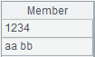

Description:
Generate multiple derivative variables from a date table sequence/record sequence variable.
Syntax:
|
P.datederive(cn, T) |
During modeling, generate multiple variables for datetime variable cn for building models and return a binary sequence where the first bit is a table sequence made up of all the derivative variables and the second bit is generation process records Rec; the derivative variables automatically perform subsequent pre-processing. |
|
P.datederive@r(cn, Rec) |
During scoring, generate a table sequence consisting of multiple derivative variables used for model building according to datetime variable cn and generation process records Rec. |
Note:
MathCli external library function (See External Library Guide).
Parameter:
|
P |
A table sequence/record sequence. |
|
cn |
A string/number, which is the name of column (or the column number starting from 1) – the to-be-pre-processed variable – in a table sequence or record sequence. |
|
T |
The target variable value used to perform potential data smoothing. |
|
Rec |
A sequence of generation process records. |
Option:
|
@bnie |
Each option specifies a target type, and options are mutual-exclusive; automatically judge the type when no option is used; the order of priorities of the options is binary, numeric, integer and enumerated. |
Return value:
Sequence/Table sequence
Example:
|
|
A |
|
|
1 |
=T("D: //catering_sale.csv").run(date1=date(date1,"yyyy/MM/dd")) |
|
|
2 |
=A1.datederive@i("date1","sales") |
Take ¡°sales¡± as the target variable and generate multiple derivative variables for date variable ¡°date1¡±: A2(1) A table sequence of derivative variables; A2(2) Generation process records Rec. @i specifies the target variable as integer. |
|
3 |
=A1.datederive@r("date1",A2(2)) |
 Generate derivative variables for ¡°date1¡± according to A2¡¯s generation process records Rec, and return a table sequence of derivative variables. |